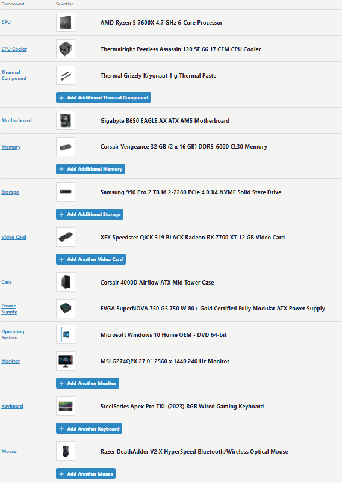
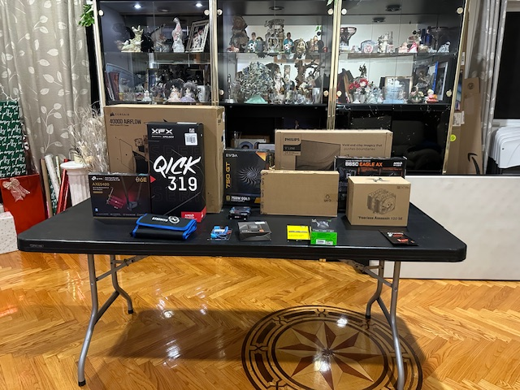
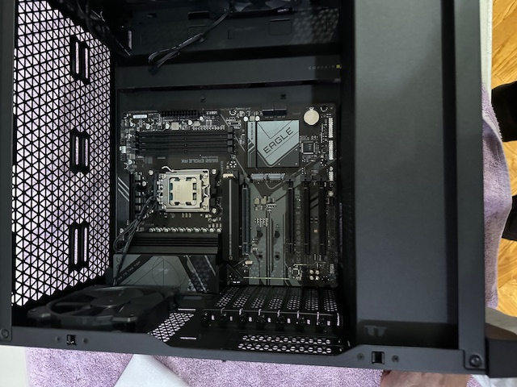
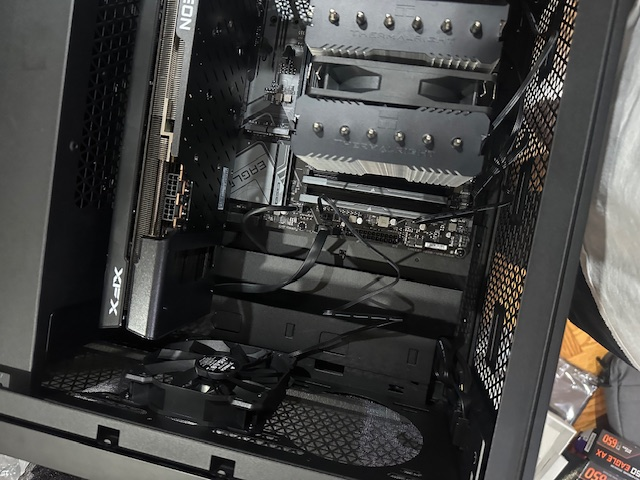
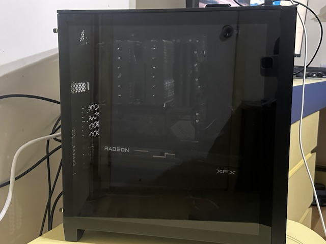
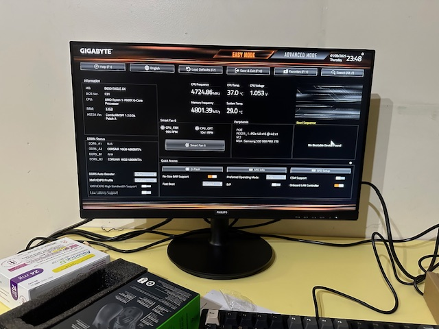
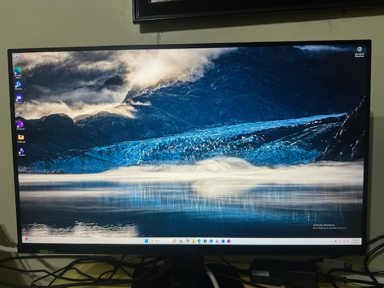

Project One: Building a Gaming PC
Introduction
Building a PC is essential for any IT professional, showcasing fundamental hardware and software knowledge. As well as demostrating hands-on expereince. The process involves researching components that are compatable, assembling hardware, and installing software.
Components:
- CPU: The "Brain" of the computer, executes most of the task inside the computer.
- CPU Cooler: A component that provides sufficient cooling to CPU.
- Motherboard: The central circuit board of a computer, hosts all components.
- RAM: Volatile memory that stores current data CPU uses, randomly access
- SSD: Non-volatile flash memory that Read/Write digital information not being actively uses, uses flash memory.
- GPU/Video Card: Processing component that handles graphic-heavy/complex calculations.
- Case: Used to store and protect all internal components, providing structure and cooling
- Power Supply: Used to provide power to all components inside PC.
- OS: Software that manages hardware and software resources, serves as a translator between user and hardware.
- Network Interface Card: Allows a computer to connect to a network.
- Monitor: Displays visual ouput to user.
- Keyboard: Input device that allows user to type and execute commands.
- Mouse: Allows user to point, click, and interact with OS
Components Used:
Build Process
Note: this is the build process that I took. If I were to build another PC, I would install the CPU, SSD, and the RAM on the motherboard before installing it in the case
- Take motherboard and set it on table.
- Install CPU on motherboard on CPU slot.
- Install Motherboard inside Case.
- Install CPU Cooling on top of CPU.
- Install RAM in appropriate RAM slots.
- Install SSD in M.2 slot
- Install GPU on PCIx16 slot
- Install and Mount PSU in 24-bin connector
- Connect all wires and organize them neatly
- Boot into motherboard's UEFI to verify build success.
- Install Window's ISO file and burn it to a USB from another computer.
- Plug USB, adjust Boot configuration order, and following windows installation prompts.
Installation Photos
This section showcases some of the photos I took during the installation process.
Workstation
Installing Motherboard on Case
Installing GPU
Final Product
Booting into UEFI
Windows Installation
Challenges Faced:
Problem: I initially struggle to identify when to connect each PSU cable on the motherboard, was hard to read the labels.
Solution: I look up my motherboard's layout online.

Problem: I generally was nervous and overthought, as well as was not sure how to do some of the steps.
Solution: Watch various youtube installation guides, establishing confidence and clarity.
Lessons Learned
- Gain experience in handling hardware.
- Learned PC compatability, how some parts go together and others don't.
- Learned to go through documentation when troubleshooting an issue.
- Learned how to install Windows from an ISO file and USB stick.